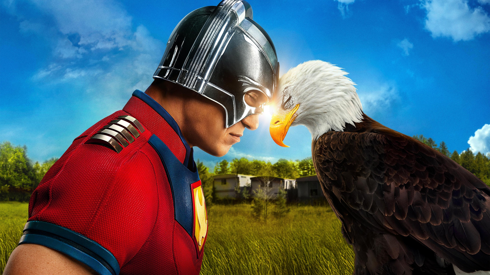

KissKh - Stream HD Asian Dramas & KShows with English Subtitles and Dubs
- KissKh live
- KissKh US live
- Kflix live
KissKh is a trusted platform for drama lovers, offering a vast collection of Asian dramas and Kshows, from timeless classics to modern hits. Whether you’re into heartwarming stories or intense emotional narratives, KissKh has something for everyone. With HD and 4K streaming options, regular updates, and an immersive user experience, KissKh provides drama enthusiasts worldwide with seamless access to the best content.
I. Welcome to KissKH
Your Ultimate Destination for Asian Dramas
- KissKH is a free streaming platform offering top-tier Kdramas, Cdramas, Jdramas, and more.
- Featuring content from Korea, Japan, China, Thailand, and beyond for global drama fans.
- Enjoy HD streaming, multilingual subtitles, and daily content updates with zero cost.
Why Watch Dramas on KissKH?
- Emotionally rich stories with universal themes and deep characters.
- Diverse genres: romance, historical, slice-of-life, crime, fantasy, and more.
- Seamless and smooth streaming for a premium experience—completely free.
II. What Makes KissKH Stand Out
üìö Massive Drama Library
- Stream hundreds of titles, from trending series to timeless classics.
- Explore curated sections like "Top Rated," "Fan Favorites," and "New Releases."
üåç Multilingual Subtitles
- Subtitles in English, Spanish, French, and more.
- Choose your preferred language for every show.
üß≠ User-Friendly Navigation
- Browse by genre, country, actor, release year, or director.
- Quick and intuitive search tools make discovering shows easy.
üé• HD Streaming
- Watch in HD and Full HD quality with minimal buffering.
- Multiple server options for smooth performance.
üíª Watch Anytime, Anywhere
- Compatible with smartphones, tablets, desktops, laptops, and smart TVs.
- No app required—stream directly from your web browser.
üéÅ 100% Free & Open Access
- Stream all content free of charge with no subscription needed.
- Create an account to unlock watchlists and viewing history.
III. Why Choose KissKH?
- Premium Quality, Free of Charge – Top-quality content without the cost.
- Diverse Library – Korean, Chinese, Japanese dramas across genres.
- Daily Content Updates – New episodes and films added regularly.
- User Recommendations – Discover hidden gems through reviews and ratings.
- Beginner-Friendly Interface – Simple design for effortless streaming.
IV. Popular Genres on KissKH
- Romantic Dramas: Crash Landing on You, Eternal Love
- Historical Epics: Empress Ki, Ruyi’s Royal Love in the Palace
- Thrillers & Crime: Signal, The Bad Kids
- Slice-of-Life & Family: Reply 1988, Mother
- Fantasy & Supernatural: Goblin, The Untamed
- Inspirational Dramas: Hope, Miracle in Cell No. 7
V. Maximize Your Experience
- Explore Curated Sections: Check "Top Rated" and "Editor’s Picks."
- Advanced Search Filters: Find by genre, year, or region.
- Enable Subtitles: Watch with multilingual options.
- Bookmark Favorites: Create your personal watchlist.
- Stay Updated: Visit “Latest Updates” for new episodes.
- Read Community Reviews: Choose shows based on ratings.
VI. Legal and Safety Notes
Content Hosting and Streaming
- KissKH streams via third-party servers and honors DMCA takedown requests.
Streaming Legality
- Check local laws before streaming—legality varies by region.
- Use a VPN for additional privacy and safer access.
VII. Frequently Asked Questions
Is KissKH free?
Yes, KissKH offers all content for free without any subscription.
Do I need an account?
No account needed, but signing up lets you save favorites and track viewing history.
Are subtitles available?
Yes, KissKH supports subtitles in multiple languages.
Can I download shows?
No. KissKH is strictly a streaming platform.
Is it safe to use?
Generally safe, but using a VPN ensures added privacy and security.
Which devices can I use?
Stream on desktops, laptops, phones, tablets, and smart TVs through a browser.
How often is new content added?
New films, episodes, and series are added daily.
What if a video doesn’t load?
Refresh the page, try another server, or check your internet connection.
VIII. Conclusion
Why Choose KissKH? – Free access, HD quality, diverse content, and a simple interface make KissKH the go-to source for Asian dramas.
Start Watching Today – Dive into the world of unforgettable stories at KissKH.com now!